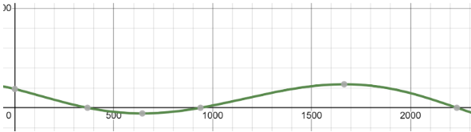

Time Frames for When Player Count Was Increasing/Decreasing
by Ishmeet Singh
A New York tech article reported that peak video game usage occurred during the COVID-19 pandemic. We first want to determine whether the population was increasing or decreasing over the COVID-19 lockdown period. To evaluate when the population of hypixel players was increasing and decreasing, we must take the derivative (f’(x)) of the function (f(x)) shown below.
Calculations
Analysis
After graphing the derivative function (f’(x)) on Desmos, we look to the x-intercepts to find these critical values. If the derivative function is positive between 2 “immediate” critical values, there is an increasing interval bounded by those 2 critical values (non inclusive). If the derivative function is negative between 2 “immediate” critical values, there is a decreasing interval bounded by those 2 critical values (non inclusive). After determining the increasing/decreasing intervals shown above, we search for the ones in the COVID-19 time frame. The x-value for the function was given in days after the date 7/23/15, so we set the bounds of the desired time frame (x-values) to be (1683, 1866) (the reported COVID-19 time frame from March to August 2020 from the NIH). This interval falls within the larger monotonically increasing interval (938.738, 2234.426), so it’s clear that the Hypixel player count was strictly/continuously increasing for the entirety of the COVID-19 lockdown period.
Comparison of COVID-19 Lockdown Dates and Dates of Maximum Player Count Increase
by Ryan Gurevich
Since 2015, the Hypixel server has seen many areas of growth and decline. One notable area of growth is 2020-2021, around the time of the COVID-19 crisis. The World Health Organization stated in 2023 that the pandemic–which had been an emergency since January 30, 2020–was no longer an emergency on May 5, 2023 (JAMA Network, May 2023). To see if the increase in player count of the server in this period was correlated to the official lockdown from March to August 2020 (NIH, Jan 2022) the second derivative can be used to find the date of the maximum rate of change during this period which can then be compared to the dates of the lockdown:
Calculations
6th-degree polynomial function approximating our data:
Taking the derivative of the function:
Taking the second derivative of the function:
Using the second derivative and graphically solve for the x-intercepts in order to find maximum and minimum values for the rate of change of the function graphically:
The x-intercepts on the interval of (0,3000) are at x = 650, 1647, 2611 (rounding to the nearest day). January 24, 2020 correlates to 1647 days (after July 23, 2015) on our graph.
Analysis
The maximum rate of server growth during the COVID-19 period was thus on January 24th, 2020 which is 6 days before the declaration of emergency by the World Health Organization and was less than 2 months prior to the official lockdown. The fact that the maximum rate of increase in player count precedes the lockdown and pandemic emergency displays that the growth of the server in this period was naturally occurring before COVID-19’s influence but does not disprove the claim of the New York Tech November 2023 article that the maximum rate of growth of video game player numbers coincided with the COVID-19 pandemic.
Using Average Value to Compare Pre-, During, and Post-Lockdown Player Count
by Christopher Tang
Hypixel Network, one of the largest Minecraft server networks globally, experienced significant changes in user activity due to the COVID-19 pandemic. By analyzing the average daily player counts during pre-pandemic, pandemic, and post-pandemic periods as declared by the World Health Organization, we can begin to understand these fluctuations and insights into player behavior in response to global events.
The average on an interval can be found by taking the definite integral of the trend line over one of the designated time periods.
- Intervals according to the JAMA article citing the WHO
- Pre-Pandemic: Jul 23 2015 - Jan 30 2020
- Pandemic: Jan 30 2020 - May 5, 2023
- Post-Pandemic: May 5, 2023 - Feb 19 2024
Calculations
Pre-Pandemic

Before the public health emergency was declared, Hypixel averaged around 36297 players a day.
Pandemic

During the public health emergency (highlighted by the green section in the graph), the average players per day (calculated by the same integral with different bounds) rose to 93868 players
Post-Pandemic

After the crisis, the average daily player dropped to around 80859 players
Analysis
The significant rise in player activity correlates with and may be caused by the worldwide actions being taken at that time by countries in an attempt to decrease human-human contact to reduce the spread of the disease. For many countries, this included the closing of many businesses and public places, leading to an increase in the time many individuals spent at home. Boredom may have driven many to online entertainment such as video games like Minecraft. After this period ended, and many regulations were lifted, people resumed their previous routines, causing the average to drop again.
Concept 4
Concept 5